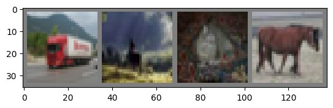

CNN-Based Image Classification — CIFAR-10

Built and trained a convolutional neural network from scratch in PyTorch for 10-class image classification, then swept batch size and epoch count to study the trade-off between gradient noise and convergence speed.
- Best configuration (batch size 16, 20 epochs) reached 65.7% test accuracy, versus 55.5% at only 5 epochs with the same batch size — most of the accuracy gain came from training longer, not from architecture changes.
- At a fixed 5 epochs, the smaller batch size (4) outperformed the larger one (58.1% vs. 55.5%) — noisier, more frequent gradient updates helped early on. That reversed once given enough epochs, where the larger batch's steadier gradient estimates pulled ahead (65.7% vs. 61.2% at 20 epochs).
- Explained and applied core CNN mechanics: how padding and kernel size determine output size, why max pooling has no learnable parameters, and why batch normalization uses running statistics at inference instead of the current batch's mean/variance.